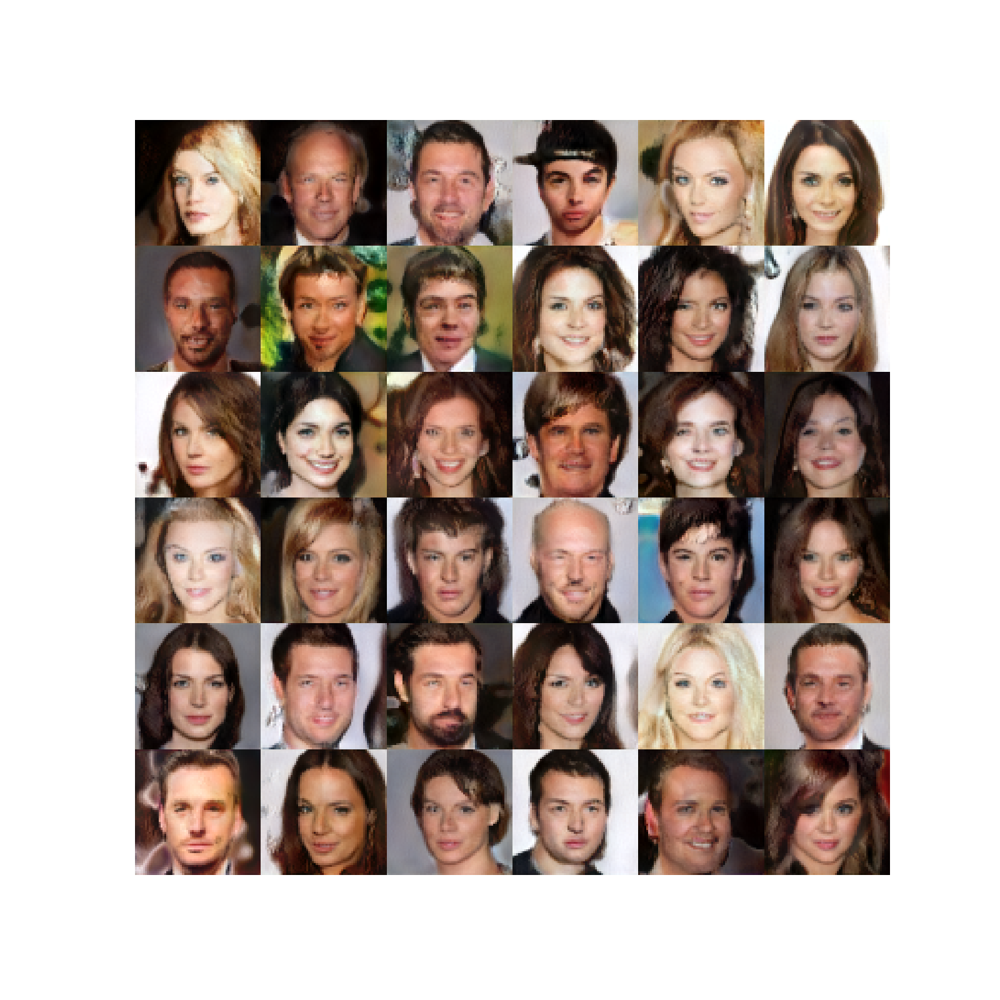
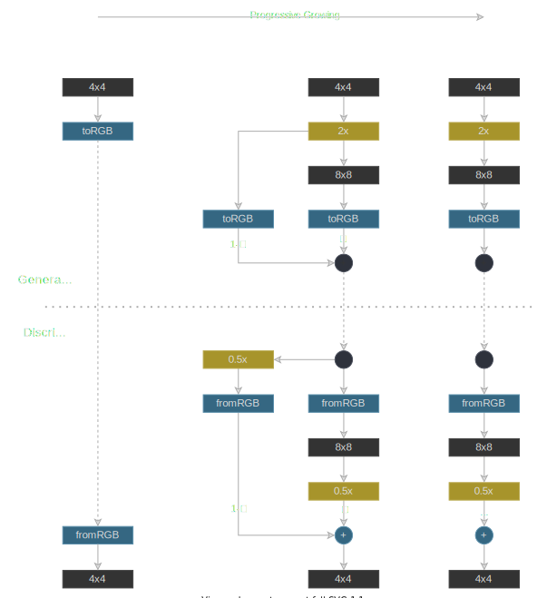
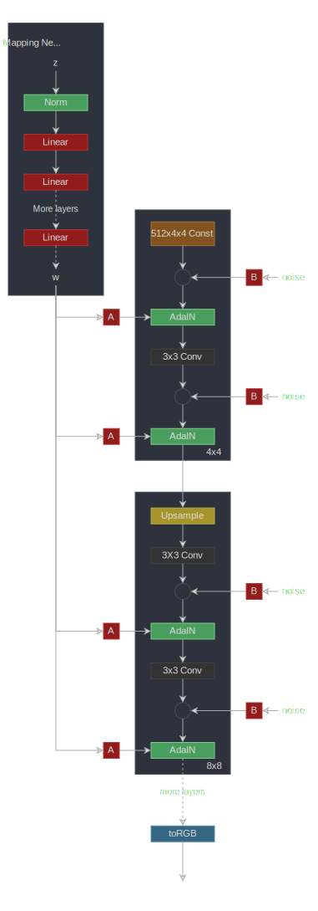
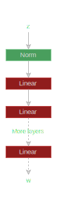
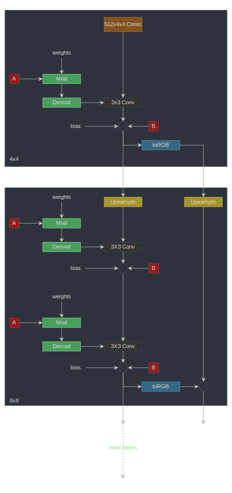
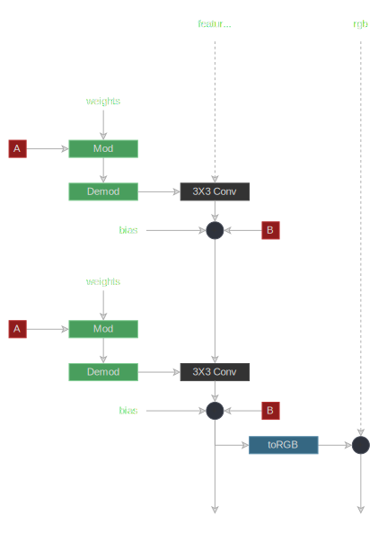
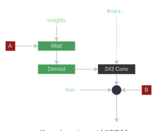
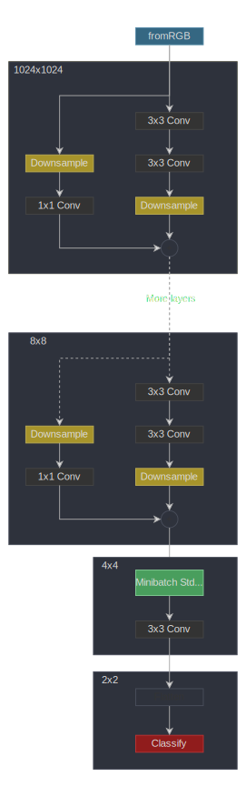

StyleGAN 2
이 문서는 StyleGAN 2 을 소개하는 논문인 StyleGAN의 화질 분석 및 개선의 PyTorch 구현입니다. StyleGAN 2는 논문 A Style-Based Generator Architecture for Generative Adversarial Networks 의 StyleGAN을 개선한 것입니다. And StyleGAN 은 논문 Progressive Growing of GANs for Improved Quality, Stability, and Variation의 Progressive GAN에 기반을 두고있습니다. 세 논문 모두 NVIDIA AI의 같은 저자의 것입니다.
우리가 구현한 것은 minimalistic StyleGAN 2 모델 트레이닝 코드입니다. 구현을 단순하게 유지하기 위해 단일 GPU 학습만 지원되며, 학습 루프를 포함하여 500라인 미만의 코드로 유지할 수 있었습니다.
🏃 여기 학습 코드가 있습니다: experiment.py
.

여기에 약 80K 단계 학습 후에 생성된 이미지들이 있습니다.
우선 논문 세 가지를 높은 수준에서 소개하겠습니다.
Generative Adversarial Networks
Generative adversarial networks 에는 생성자와 판별기라는 두 가지 구성 요소가 있습니다. The generator network는 랜덤한 잠재 벡터를 가지고 () 사실적인 이미지를 생성하려고 시도합니다.
Progressive GAN
Progressive GAN는 사이즈가 ()인 고해상도 이미지를 생성합니다. 이것은 이미지의 크기를 점진적으로 증가시킴으로써 가능합니다. 가장 먼저, 사이즈의 이미지를 생성하고 , then an 이미지를 생성하는 네트워크를 원하는 이미지 해상도까지 훈련시킵니다.
각 해상도에서 generator 네트워크는 RGB로 변환된 컨볼루션의 잠재 공간에서 이미지를 생성합니다.
낮은 해상도에서 높은 해상도로 진행할 때 (예를 들어 에서 ) 우리는 잠재 이미지를 로 스케일 조정 후 새로운 블록과 (두 개의 컨볼루션 레이어) 그리고 RGB를 얻기 위해 새로운 레이어를 추가합니다. 스케일의 RGB 이미지에 residual connection을 추가하여 원활하게 전환이 이루어집니다. 이 residual connection의 가중치는 천천히 감소하여 새 블록이 이어받도록 합니다.판별자는 생성자 신경망의 이미지 복제본입니다. 판별자의 점진적인 성장도 마찬가지입니다.

및 피쳐맵 해상도 스케일링 및 스케일링을 나타냅니다. , , ...는 판별자와 생성자 블록에서 피처맵 해상도를 나타냅니다. 각각 판별자와 생성자 블록은 leaky ReLU activations이 포함된 두 레이어의 컨볼루션 신경망으로 이루어집니다.
이 블록들은 구현시 분산을 증가시키기 위해서 미니배치 표준편차와 우리가 바로 아래에 논의한 균등화된 학습률을 사용했습니다. 또한 각 픽셀에서 특징 벡터과 정규화되는 픽셀 단위의 정규화 사용한다. 이를 모든 컨볼루션 레이어 출력(RGB 제외)에 적용합니다.
StyleGAN
StyleGAN Progressive GAN의 판별자 구조를 유지하면서 생성자를 개선하였습니다.
Mapping Network
랜덤한 잠재 벡터를() 다른 8레이어의 잠재 공간()으로 매핑합니다. 이것은 변동 요인이 더 선형적인 (분리된) 중간 잠재 공간을 를 제공합니다.
AdaIN
그러면 가중치 는 레이어당, , 두 개의 벡터로 변형되고(styles), 각각의 레이어에서 연산자 (정규화와 스케일링)와 스케일링과 이동 (편향이동)에 사용됩니다:
Style Mixing
생성자가 인접한 스타일이 상관 관계에 있다고 가정하지 않도록 여러 블럭에 대해 다른 스타일을 랜덤하게 사용합니다. 즉, 생성자는 두 잠재 벡터와 일치하는 가중치샘플링하고 를 랜덤하게 기반으로한 스타일의 블록과 을 기반으로한 스타일의 블록을 사용합니다.
Stochastic Variation
노이즈는 각 블록에서 사용할 수 있으며, 이는 생성자가 보다 사실적인 이미지를 생성하는 데 도움이 됩니다. 노이즈는 학습된 가중치로 채널당 스케일링됩니다.
Bilinear Up and Down Sampling
모든 업샘플링 및 다운샘플링 작업에는 bilinear smoothing이 수반됩니다.

선형 레이어를 의미합니다. 브로드캐스트와 스케일링 연산자를 의미합니다. (노이즈는 단일 채널입니다.) StyleGAN 또한 Progressive GAN와 마찬가지로 점진적인 성장을 사용합니다.
StyleGAN 2
StyleGAN 2는 StyleGAN의 생성자와 판별자를 모두 변경합니다.
Weight Modulation and Demodulation
그들은 연산자를 제거하고 weight modulation 와 demodulation step로 대체했습니다. 이는 연산자의 정규화로 인해 생성된 이미지에 존재하는 droplet artifacts라고 불리는 것을 개선하는 것으로 알려져있습니다. 레이어당 스타일 벡터는 처럼 로부터 계산됩니다.
그리고 컨볼루션 가중치 는 다음과 같이 변조됩니다. (여기서는 중간 잠재 공간이 아닌 가중치를 언급하며, 우리는 논문과 같은 표기법을 고수하고 있습니다)
이것은 정규화에 의해 변형됩니다 는 입력값의 채널이고, is the output channel, and 커널 인덱스입니다.
Path Length Regularization
경로 길이 정규화는 에서 고정 크기 단계가 생성된 이미지에 0이 아닌 고정 크기 변화를 초래하도록 유도합니다.
No Progressive Growing
StyleGAN2는 판별자에 residual connections(다운샘플링 포함)을 사용하고 업샘플링(각 레이어의 RGB 출력이 추가됨 - 피처맵에 residual connection 없음)이 있는 생성자에 skip connections을 사용합니다. 그들은 실험을 통해 저해상도 레이어의 기여도가 훈련 초기에 더 높고 그 다음에는 고해상도 레이어가 차지한다는 것을 보여줍니다.
148import math
149from typing import Tuple, Optional, List
150
151import numpy as np
152import torch
153import torch.nn.functional as F
154import torch.utils.data
155from torch import nnMapping Network

이것은 8개의 선형 레이어가 있는 MLP입니다. 매핑 네트워크는 잠재 벡터 를 중간 잠재 공간 에 매핑합니다. 공간은 변동 요인이 더 선형적으로 되는 이미지 공간으로부터 분리됩니다.
158class MappingNetwork(nn.Module):features피처 와 의 개수입니다.
n_layers매핑 네트워크의 레이어 수입니다.
173 def __init__(self, features: int, n_layers: int):178 super().__init__()MLP 생성
181 layers = []
182 for i in range(n_layers):184 layers.append(EqualizedLinear(features, features))Leaky Relu
186 layers.append(nn.LeakyReLU(negative_slope=0.2, inplace=True))
187
188 self.net = nn.Sequential(*layers)190 def forward(self, z: torch.Tensor):를 정규화하기
192 z = F.normalize(z, dim=1)를 에 map하기
194 return self.net(z)StyleGAN2 Generator

는 선형 레이어를 뜻한다. 는 브로드캐스트 및 스케일 조정 작업을 나타냅니다 (노이즈는 단일 채널임). toRGB
또한 단순하게 유지하기 위해 다이어그램에 표시되지 않은 스타일 변조 기능도 있습니다.
생성자는 학습된 상수로 시작하여 일련의 블록으로 구성됩니다. 각 블록에서 특징 맵 해상도가 두 배로 증가합니다. 각 블록은 RGB 이미지를 출력하고 최종 RGB 이미지를 얻기 위해 축척되고 합산됩니다.
197class Generator(nn.Module):log_resolution는 이미지 해상도의d_latent의 차원입니다.n_features최고 해상도의 컨볼루션 레이어에 있는 특징 수(최종 블록)max_features생성자 블록의 최대 피쳐 수
214 def __init__(self, log_resolution: int, d_latent: int, n_features: int = 32, max_features: int = 512):221 super().__init__()226 features = [min(max_features, n_features * (2 ** i)) for i in range(log_resolution - 2, -1, -1)]생성자 블록의 개수
228 self.n_blocks = len(features)학습할 수 있는 상수
231 self.initial_constant = nn.Parameter(torch.randn((1, features[0], 4, 4)))RGB를 얻기 위한 해상도 및 레이어를 위한 최초의 스타일 블록
234 self.style_block = StyleBlock(d_latent, features[0], features[0])
235 self.to_rgb = ToRGB(d_latent, features[0])생성자 블록
238 blocks = [GeneratorBlock(d_latent, features[i - 1], features[i]) for i in range(1, self.n_blocks)]
239 self.blocks = nn.ModuleList(blocks)배 업샘플링 레이어. 각 블록에서 피쳐 공간이 업샘플링됩니다
243 self.up_sample = UpSample()w는 입니다. Mix-styles을 위해 (서로 다른 를 층별로 사용), 각 생성자 블록마다 별도의 를 제공합니다. 이것의 사이즈는 다음과 같습니다.[n_blocks, batch_size, d_latent]input_noise는 각 블록의 노이즈입니다. 각 블록(초기값 제외)에는 각 컨볼루션 레이어(diagram 참조) 뒤에 두 개의 노이즈 입력이 있기 때문에 노이즈 센서 쌍의 리스트입니다.
245 def forward(self, w: torch.Tensor, input_noise: List[Tuple[Optional[torch.Tensor], Optional[torch.Tensor]]]):배치 사이즈
255 batch_size = w.shape[1]배치 크기에 맞게 학습된 상수를 확장
258 x = self.initial_constant.expand(batch_size, -1, -1, -1)첫 번째 스타일 블록
261 x = self.style_block(x, w[0], input_noise[0][1])첫번째 rgb 이미지
263 rgb = self.to_rgb(x, w[0])나머지 블록 평가
266 for i in range(1, self.n_blocks):피처맵을 업샘플링
268 x = self.up_sample(x)RGB 이미지를 업샘플링한 후 블록에서 RGB에 추가
272 rgb = self.up_sample(rgb) + rgb_new최종 RGB 영상 반환
275 return rgb생성자 블록

는 선형 레이어를 뜻합니다.
브로드캐스트 및 스케일 조정 작업을 나타냅니다(노이즈는 단일 채널임).
toRGB
또한 단순하게 유지하기 위해 다이어그램에 표시되지 않은 스타일 변조 기능도 있습니다.
생성자 블록은 두개의 스타일 블록 ( 스타일 변조를 사용한 컨볼루션) 과 RGB를 출력값으로 합니다.
278class GeneratorBlock(nn.Module):d_latent는 의 차원입니다.in_features입력 피처 맵에 있는 피처의 개수입니다.out_features출력 피처 맵에 있는 피처의 개수입니다.
294 def __init__(self, d_latent: int, in_features: int, out_features: int):300 super().__init__()303 self.style_block1 = StyleBlock(d_latent, in_features, out_features)toRGB 레이어
308 self.to_rgb = ToRGB(d_latent, out_features)x은 입력 피처맵입니다. 사이즈는 다음과 같습니다.[batch_size, in_features, height, width]w는 크기가[batch_size, d_latent]인 입니다.noise는 크기가[batch_size, 1, height, width]인 두개의 노이즈 텐서의 튜플입니다.
310 def forward(self, x: torch.Tensor, w: torch.Tensor, noise: Tuple[Optional[torch.Tensor], Optional[torch.Tensor]]):첫 번째 노이즈의 첫번째 style 블록입니다. 출력 데이터의 사이즈는[batch_size, out_features, height, width]
입니다.
318 x = self.style_block1(x, w, noise[0])두 번째 노이즈의 두 번째 style 블록입니다. 출력 데이터의 사이즈는[batch_size, out_features, height, width]
입니다.
321 x = self.style_block2(x, w, noise[1])RGB 이미지
324 rgb = self.to_rgb(x, w)피처맵과 rgb를 반환
327 return x, rgb스타일 블록

는 선형 레이어를 뜻합니다다. 는 브로드캐스트 및 스케일링 작업을 나타냅니다(노이즈는 단일 채널임).
스타일 블록에 가중치 변조 컨볼루션 레이어가 있습니다.
330class StyleBlock(nn.Module):d_latent의 차원입니다.in_features입력 피쳐 맵에 있는 피쳐의 개수입니다.out_features출력 피쳐 맵에 있는 피쳐의 개수입니다.
344 def __init__(self, d_latent: int, in_features: int, out_features: int):350 super().__init__()로 부터 스타일 벡터를 얻습니다. (diagram 에서 로 표시됨.) 균등화된 학습률 선형 레이어
353 self.to_style = EqualizedLinear(d_latent, in_features, bias=1.0)균등화된 학습률 선형 레이어
355 self.conv = Conv2dWeightModulate(in_features, out_features, kernel_size=3)노이즈의 스케일
357 self.scale_noise = nn.Parameter(torch.zeros(1))편향
359 self.bias = nn.Parameter(torch.zeros(out_features))활성화 함수
362 self.activation = nn.LeakyReLU(0.2, True)x는 사이즈가[batch_size, in_features, height, width]인 입력의 피처맵입니다.w는 사이즈가[batch_size, d_latent]인 입니다.noise는 사이즈가[batch_size, 1, height, width]인 텐서입니다.
364 def forward(self, x: torch.Tensor, w: torch.Tensor, noise: Optional[torch.Tensor]):스타일 벡터
371 s = self.to_style(w)가중치 변조 컨볼루션
373 x = self.conv(x, s)스케일 조정 및 노이즈 추가
375 if noise is not None:
376 x = x + self.scale_noise[None, :, None, None] * noise편향 추가 및 활성화 함수 평가
378 return self.activation(x + self.bias[None, :, None, None])381class ToRGB(nn.Module):d_latent는 의 차원입니다.features피처맵에 있는 피처의 개수입니다.
394 def __init__(self, d_latent: int, features: int):399 super().__init__()로부터 스타일 벡터를 얻습니다. (diagram에서 로 표시됨.) 균등화 학습률 선형 레이어
402 self.to_style = EqualizedLinear(d_latent, features, bias=1.0)디모듈레이션이 없는 가중치 변조 컨볼루션 레이어
405 self.conv = Conv2dWeightModulate(features, 3, kernel_size=1, demodulate=False)편향
407 self.bias = nn.Parameter(torch.zeros(3))활성화 함수
409 self.activation = nn.LeakyReLU(0.2, True)x사이즈가[batch_size, in_features, height, width]인 입력 피처맵입니다.w는 사이즈가[batch_size, d_latent]인 입니다.
411 def forward(self, x: torch.Tensor, w: torch.Tensor):스타일 벡터
417 style = self.to_style(w)가중치 변조 컨볼루션
419 x = self.conv(x, style)편향 추가 및 활성화 함수 평가
421 return self.activation(x + self.bias[None, :, None, None])424class Conv2dWeightModulate(nn.Module):in_features는 입력 피처맵에 있는 피처의 개수입니다.out_features는 출력 피처맵에 있는 피처의 개수입니다.kernel_size는 컨볼루션 커널의 사이즈입니다.demodulate는 표준 편차로 가중치를 정규화할지 여부를 플래그로 지정합니다.eps는 정규화를 위한 입니다.
431 def __init__(self, in_features: int, out_features: int, kernel_size: int,
432 demodulate: float = True, eps: float = 1e-8):440 super().__init__()출력 피처의 개수
442 self.out_features = out_features가중치 정규화 유무
444 self.demodulate = demodulate패딩 사이즈
446 self.padding = (kernel_size - 1) // 2449 self.weight = EqualizedWeight([out_features, in_features, kernel_size, kernel_size])451 self.eps = epsx는 사이즈가[batch_size, in_features, height, width]인 입력 피처맵입니다.s는 사이즈가[batch_size, in_features]인 스타일 기반 스케일링 텐서입니다.
453 def forward(self, x: torch.Tensor, s: torch.Tensor):배치 사이즈, 높이, 너비
460 b, _, h, w = x.shape스케일 사이즈 바꾸기
463 s = s[:, None, :, None, None]465 weights = self.weight()[None, :, :, :, :]가 입력 채널일때, 는 출력값 채널이고 는 커널의 인덱스입니다.
결과의 사이즈는 [batch_size, out_features, in_features, kernel_size, kernel_size]
입니다.
470 weights = weights * s디모듈레이션
473 if self.demodulate:475 sigma_inv = torch.rsqrt((weights ** 2).sum(dim=(2, 3, 4), keepdim=True) + self.eps)477 weights = weights * sigma_inv x사이즈 변경
480 x = x.reshape(1, -1, h, w)가중치 사이즈 변경
483 _, _, *ws = weights.shape
484 weights = weights.reshape(b * self.out_features, *ws)그룹화된 컨볼루션을 사용하여 샘플 단위 커널로 컨볼루션을 효율적으로 계산합니다. 즉, 배치의 각 샘플에 대해 다른 커널(가중치)이 있습니다.
488 x = F.conv2d(x, weights, padding=self.padding, groups=b)x
를 [batch_size, out_features, height, width]
로 사이즈 변경 후 반환
491 return x.reshape(-1, self.out_features, h, w)StyleGAN 2 판별자

판별자는 먼저 이미지를 동일한 해상도의 특징 맵으로 변환한 다음 잔차 연결이 있는 일련의 블록을 통해 이미지를 실행합니다. 해상도는 특성들의 수를 두 배로 늘리면서 각 블록마다 배씩 다운 샘플링됩니다.
494class Discriminator(nn.Module):log_resolution은 의 이미지 해상도이다.n_features가장 높은 해상도의 컨볼루션 레이어에 있는 특징 수 (첫 번째 블록)max_features생성자 블록의 최대 특징 수
508 def __init__(self, log_resolution: int, n_features: int = 64, max_features: int = 512):514 super().__init__()RGB 이미지를 n_features특징들의 수로 특징 맵을 변환하는 레이어입니다.
517 self.from_rgb = nn.Sequential(
518 EqualizedConv2d(3, n_features, 1),
519 nn.LeakyReLU(0.2, True),
520 )525 features = [min(max_features, n_features * (2 ** i)) for i in range(log_resolution - 1)]판별자 블럭들
529 blocks = [DiscriminatorBlock(features[i], features[i + 1]) for i in range(n_blocks)]
530 self.blocks = nn.Sequential(*blocks)533 self.std_dev = MiniBatchStdDev()표준 편차 맵 추가 후 특징들의 수
535 final_features = features[-1] + 1마지막 컨볼루션 레이어
537 self.conv = EqualizedConv2d(final_features, final_features, 3)분류를 하기 위한 최종 선형 레이어
539 self.final = EqualizedLinear(2 * 2 * final_features, 1)x는 입력 이미지의 크기입니다.[batch_size, 3, height, width]
541 def forward(self, x: torch.Tensor):이미지 정규화를 시도하세요. (이것은 전적으로 선택사항이지만, 초기 훈련 속도가 약간 빨라집니다.)
547 x = x - 0.5RGB에서 변환합니다.
549 x = self.from_rgb(x)미니 배치 표준 편차를 계산하고 추가하세요.
554 x = self.std_dev(x)컨볼루션
556 x = self.conv(x)Flatten
558 x = x.reshape(x.shape[0], -1)분류 점수를 반환합니다.
560 return self.final(x)563class DiscriminatorBlock(nn.Module):in_features은 입력 특성 맵의 특성 수입니다.out_features은 출력 특성 맵에 특성 수입니다.
574 def __init__(self, in_features, out_features):579 super().__init__()잔차 연결을 위해 다운 샘플링 및 컨볼루션 레이어
581 self.residual = nn.Sequential(DownSample(),
582 EqualizedConv2d(in_features, out_features, kernel_size=1))2개의 컨볼루션
585 self.block = nn.Sequential(
586 EqualizedConv2d(in_features, in_features, kernel_size=3, padding=1),
587 nn.LeakyReLU(0.2, True),
588 EqualizedConv2d(in_features, out_features, kernel_size=3, padding=1),
589 nn.LeakyReLU(0.2, True),
590 )다운 샘플링 레이어
593 self.down_sample = DownSample()잔차를 추가한 후 스케일링 팩터
596 self.scale = 1 / math.sqrt(2)598 def forward(self, x):잔차 연결을 얻습니다.
600 residual = self.residual(x)컨볼루션
603 x = self.block(x)다운 샘플링
605 x = self.down_sample(x)잔차와 스케일을 추가하세요.
608 return (x + residual) * self.scale미니 배치 표준 편차
미니 배치 표준 편차는 특성 맵의 각 특성에 대해 미니 배치(또는 미니 배치 내의 하위 그룹)에 걸쳐 표준 편차를 계산합니다. 그런 다음 모든 표준 편차의 평균을 가져와 하나의 추가 특성으로 특성 맵에 추가합니다.
611class MiniBatchStdDev(nn.Module):group_size는 표준 편차를 계산할 샘플 수입니다.
623 def __init__(self, group_size: int = 4):627 super().__init__()
628 self.group_size = group_sizex는 특성 맵입니다.
630 def forward(self, x: torch.Tensor):배치 크기가 그룹 크기로 나누어지는지 확인합니다.
635 assert x.shape[0] % self.group_size == 0샘플을 group_size으로 분할하고
, 각 특성의 표준 편차를 계산하려고 하므로 특성 맵을 1차원으로 펼칩니다.
638 grouped = x.view(self.group_size, -1)645 std = torch.sqrt(grouped.var(dim=0) + 1e-8)평균 표준 편차를 가져옵니다.
647 std = std.mean().view(1, 1, 1, 1)특성 맵에 추가할 표준 편차를 확장합니다.
649 b, _, h, w = x.shape
650 std = std.expand(b, -1, h, w)특성 맵에 표준 편차를 추가(연결)합니다.
652 return torch.cat([x, std], dim=1)다운 샘플링
다운 샘플링 동작은 이중선형 보간법을 사용하여 배로 스무딩합니다. 이는 Making Convolutional Networks Shift-Invariant Again논문을 기반으로 합니다.
655class DownSample(nn.Module):667 def __init__(self):
668 super().__init__()스무딩 레이어
670 self.smooth = Smooth()672 def forward(self, x: torch.Tensor):매끄럽게 or 흐리게
674 x = self.smooth(x)스케일 축소
676 return F.interpolate(x, (x.shape[2] // 2, x.shape[3] // 2), mode='bilinear', align_corners=False)업 샘플
업 샘플 동작은 영상을 배 확대하고 각 특징 채널을 스무딩 합니다. 이 것은 Making Convolutional Networks Shift-Invariant Again논문 기반으로 합니다.
679class UpSample(nn.Module):690 def __init__(self):
691 super().__init__()업 샘플링 레이어
693 self.up_sample = nn.Upsample(scale_factor=2, mode='bilinear', align_corners=False)스무딩 레이어
695 self.smooth = Smooth()697 def forward(self, x: torch.Tensor):업 샘플링과 스무딩
699 return self.smooth(self.up_sample(x))702class Smooth(nn.Module):711 def __init__(self):
712 super().__init__()흐리게하는 커널
714 kernel = [[1, 2, 1],
715 [2, 4, 2],
716 [1, 2, 1]]커널을 PyTorch 텐서로 변환합니다.
718 kernel = torch.tensor([[kernel]], dtype=torch.float)커널을 정규화합니다.
720 kernel /= kernel.sum()커널을 고정된 매개변수로 저장합니다 (그라디언트 업데이트 없음)
722 self.kernel = nn.Parameter(kernel, requires_grad=False)패딩 레이어
724 self.pad = nn.ReplicationPad2d(1)726 def forward(self, x: torch.Tensor):입력 특징 맵의 크기를 가져옵니다.
728 b, c, h, w = x.shape스무딩을 위해 크기를 재조정합니다.
730 x = x.view(-1, 1, h, w)패딩을 추가합니다.
733 x = self.pad(x)커널에 스무딩(흐리게)합니다.
736 x = F.conv2d(x, self.kernel)크기를 재조정하고 반환합니다.
739 return x.view(b, c, h, w)742class EqualizedLinear(nn.Module):in_features는 입력 특성 맵의 특성들의 수입니다.out_features는 출력 특성 맵의 특성들의 수입니다.bias는 편향 초기화 상수입니다.
751 def __init__(self, in_features: int, out_features: int, bias: float = 0.):758 super().__init__()760 self.weight = EqualizedWeight([out_features, in_features])편향
762 self.bias = nn.Parameter(torch.ones(out_features) * bias)764 def forward(self, x: torch.Tensor):선형 변환
766 return F.linear(x, self.weight(), bias=self.bias)769class EqualizedConv2d(nn.Module):in_features는 입력 특성 맵의 특성들의 수입니다.out_features는 출력 특성 맵의 특성들의 수입니다.kernel_size는 컨볼루션 커널의 크기입니다.padding는 각 크기 차원의 양쪽에 추가되는 패딩입니다.
778 def __init__(self, in_features: int, out_features: int,
779 kernel_size: int, padding: int = 0):786 super().__init__()패딩 크기
788 self.padding = padding790 self.weight = EqualizedWeight([out_features, in_features, kernel_size, kernel_size])편향
792 self.bias = nn.Parameter(torch.ones(out_features))794 def forward(self, x: torch.Tensor):컨볼루션
796 return F.conv2d(x, self.weight(), bias=self.bias, padding=self.padding)학습률 균등화된 가중치 파라미터
이것은 Progressive GAN논문에 소개된 균등화된 학습률을 기반으로 합니다. 에서 가중치를 초기화하는 대신 으로 가중치를 초기화한 다음 사용할 때 를 곱합니다.
저장된 파라미터의 그래디언트 에 를 곱하지만 Adam과 같은 옵티마이저들은 제곱 그라디언트의 평균으로 정규화하므로 영향을 미치지 않습니다.
의 옵티마이저 업데이터는 학습률 에 비례합니다. 그러나 유효한 가중치 는 에 비례하여 업데이트됩니다. 균등화된 학습률이 없다면, 유효한 가중치는 에 비례하여 업데이트됩니다.
따라서 우리는 이러한 가중치 파라미터에 대해 학습률을 만큼 효과적으로 확장하고 있습니다.
799class EqualizedWeight(nn.Module):shape는 가중치 파라미터의 크기입니다.
820 def __init__(self, shape: List[int]):824 super().__init__()He 초기화 상수
827 self.c = 1 / math.sqrt(np.prod(shape[1:]))을 사용하여 가중치를 초기화합니다.
829 self.weight = nn.Parameter(torch.randn(shape))가중치 곱셈 계수
832 def forward(self):가중치에 를 곱하고 반환
834 return self.weight * self.c그라디언트 페널티
이것은 Which Training Methods for GANs do actually Converge?라는 논문에서 나온 정규화 페널티입니다.
즉 실제 이미지 ()에 대해 이미지에 대한 판별자의 그래디언트의 L2-norm을 줄이려고 시도합니다.
837class GradientPenalty(nn.Module):x는d는
853 def forward(self, x: torch.Tensor, d: torch.Tensor):배치 크기를 얻습니다.
860 batch_size = x.shape[0]에 대한 의 그래디언트를 계산합니다. grad_outputs
는 의 그래디언트를 원하기 때문에 로 설정되며, 이 손실에 대한 가중치와 관련하여 그래디언트를 계산해야 하므로 그래프를 생성하고 유지해야 합니다.
866 gradients, *_ = torch.autograd.grad(outputs=d,
867 inputs=x,
868 grad_outputs=d.new_ones(d.shape),
869 create_graph=True)norm을 계산하기 위하여 그래디언트 크기를 재조정합니다.
872 gradients = gradients.reshape(batch_size, -1)norm을 계산합니다.
874 norm = gradients.norm(2, dim=-1)손실을 반환합니다.
876 return torch.mean(norm ** 2)경로 길이 페널티
이 정규화는 의 고정된 크기(size) 스텝이 이미지의 이미지의 고정된 크기(magnitude)변화를 초래하도록 유도합니다.
where 는 자코비언 입니다, 는 매핑 네트워크의 에서 샘플링되며, 는 노이즈 이 있는 이미지입니다.
는 훈련이 진행됨에 따라 의 지수 이동 평균입니다.
는 자코비안을 명시적으로 계산하지 않고 계산됩니다.
879class PathLengthPenalty(nn.Module):beta는 지수 이동 평균 를 계산하는 데 사용되는 상수 입니다.
903 def __init__(self, beta: float):907 super().__init__()910 self.beta = beta계산된 스텝 수
912 self.steps = nn.Parameter(torch.tensor(0.), requires_grad=False)의 지수합 where 는 번째 훈련 스텝에서의 값입니다.
916 self.exp_sum_a = nn.Parameter(torch.tensor(0.), requires_grad=False)w는[batch_size, d_latent]크기의 배치입니다.x는[batch_size, 3, height, width]크기로 생성된 이미지들입니다.
918 def forward(self, w: torch.Tensor, x: torch.Tensor):디바이스를 얻습니다.
925 device = x.device픽셀들의 수를 얻습니다.
927 image_size = x.shape[2] * x.shape[3]를 계산합니다.
929 y = torch.randn(x.shape, device=device)933 output = (x * y).sum() / math.sqrt(image_size)를 얻을 수 있는 그라디언트를 계산합니다.
936 gradients, *_ = torch.autograd.grad(outputs=output,
937 inputs=w,
938 grad_outputs=torch.ones(output.shape, device=device),
939 create_graph=True)의 L2-norm을 계산합니다.
942 norm = (gradients ** 2).sum(dim=2).mean(dim=1).sqrt()첫 번째 스텝 후에 정규화합니다.
945 if self.steps > 0:를 계산합니다.
948 a = self.exp_sum_a / (1 - self.beta ** self.steps)페널티를 계산합니다.
952 loss = torch.mean((norm - a) ** 2)
953 else:우리가 를 계산할 수 없다면 더미 손실을 반환합니다.
955 loss = norm.new_tensor(0)의 평균을 계산합니다.
958 mean = norm.mean().detach()지수 합을 업데이트합니다.
960 self.exp_sum_a.mul_(self.beta).add_(mean, alpha=1 - self.beta)증가
962 self.steps.add_(1.)페널티를 반환합니다.
965 return loss